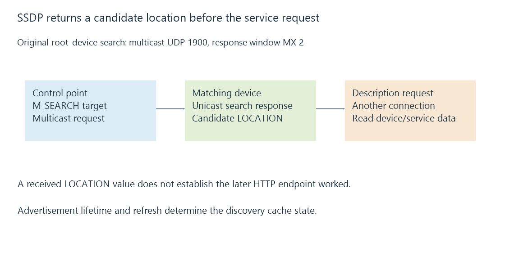

SSDP discovery, advertisements and service locations
SSDP discovers UPnP candidates through advertisements and searches, returning service-description locations whose later accessibility must be evaluated separately.
SSDP helps a UPnP control point find devices and services. A device can advertise its presence, and a client can search for a matching type.
The discovery exchange describes a candidate. Using that candidate requires a later request to its advertised location.
A search has a target and response window
This original readable search example targets UPnP root devices:
M-SEARCH * HTTP/1.1
HOST: 239.255.255.250:1900
MAN: "ssdp:discover"
MX: 2
ST: upnp:rootdevice
USER-AGENT: LearnOS/1.0 UPnP/2.0 Example/1.0
It shows the relevant fields rather than an emitted UDP packet. Actual wire framing and complete protocol requirements belong to the cited UPnP architecture.
The multicast destination is UDP port 1900. The search target ST selects what the control point is asking for. MX gives the specified response window used by this multicast search.
Matching devices can spread their responses through that interval rather than all answering at once.
The response points toward another resource
A matching search response can include a LOCATION URL for the device description. The control point then obtains that description and interprets its device/service information.

For an invented generic device, a location might be http://192.168.50.40:5000/description.xml.
Receiving that text proves the discovery reply arrived. It does not prove the client can connect to TCP port 5000 or obtain the expected XML there.
A description can also contain service control and event locations. Those are subsequent application endpoints, not the same UDP discovery transaction.
Advertisements have lifetimes
A device can send availability advertisements, refresh them and indicate departure. Cache age tells a control point how long the advertised candidate remains valid under that exchange.
In an original lifetime exercise, an advertisement received at second zero has maximum age 1800 seconds. A valid refresh at second nine hundred with the same age moves the declared expiry to second 2700.
A departed or expired candidate should not remain equivalent to a freshly observed service. A saved UI entry can outlive the discovery cache as another application state.
Scope and transport permissions can differ
A network can permit ordinary server connections while filtering multicast searches or their replies. Guest isolation and routed boundaries can create that distinction.
Even when discovery is relayed, the advertised location must be meaningful to the receiving client. A private address from another realm can be visible but unusable.
SSDP is also distinct from mDNS and Emby’s own discovery. They use different multicast/broadcast destinations, messages and service descriptions. Successful SSDP does not establish the other exchanges worked.
See Also
- Multicast DNS and local-link naming
- Emby server discovery and advertised endpoints
- UPnP port mapping and gateway control
- UDP datagrams and application delivery policy